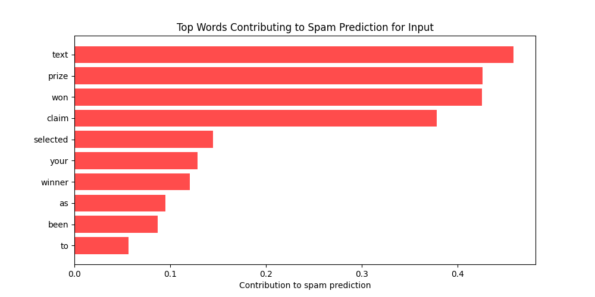

Project 1
I developed a 2D fishing game using Unity and C#. The game features a serene lakeside environment where players can cast their lines and catch various types of fish. I utilized Unity's physics engine to create realistic water and fishing mechanics, and implemented C# scripts to handle player input, fish behavior, and scoring. The project also includes a user-friendly interface with a score tracker and an inventory system for the caught fish. This game was a great opportunity to enhance my skills in game development and object-oriented programming.
Project 2
ParkingPulse is an AI-driven system that enhances parking lot security and management through real-time vehicle tracking and identification. Using computer vision, ParkingPulse identifies and monitors vehicles entering and exiting the parking lot. The system can differentiate between customer vehicles and others, providing parking lot operators with real-time data on occupancy rates, customer presence, and potential security threats.
Project 3
The email spam detector is a machine learning-based application developed to classify emails as either spam or legitimate (ham). Built using scikit-learn, the tool relies on vectorization techniques for text preprocessing and efficient feature extraction to ensure accurate predictions. This email spam detector serves as a critical tool for enhancing productivity by reducing unwanted email clutter and protecting users from phishing attempts. It aligns with ethical AI use, ensuring user data privacy and security.